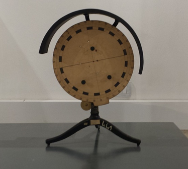

Disco ottico di Hartl
Scuola di provenienza: Liceo Classico "P. Colletta", Avellino
Settore: Ottica
Costruttori: Sconosciuto
Materiali: Ottone e ferro
Accessori: Alcuni prismi, lenti e specchi
Stato di conservazione: Buono
Descrizione: Il disco ottico di Hartl consta di un sostegno a treppiede,robusto e pesante,che porta un disco metallico recante una divisione periferica in gradi,visibile da lontano. Intorno all’asse del disco è girevole un mezzo cilindro di lamiera,che può essere fissato in una data posizione, e che ha lo scopo di oscurare parzialmente il disco durante l’esperimento. Il mezzo cilindro è dotato di una finestra, che si chiude con uno schermo con cinque fessure scorrevoli lungo due guide. Da queste cinque fessure si fanno entrare i raggi paralleli; per distinguere chiaramente un raggio da un altro è possibile collocare nelle cinque fessure cinque vetrini di colore diverso.